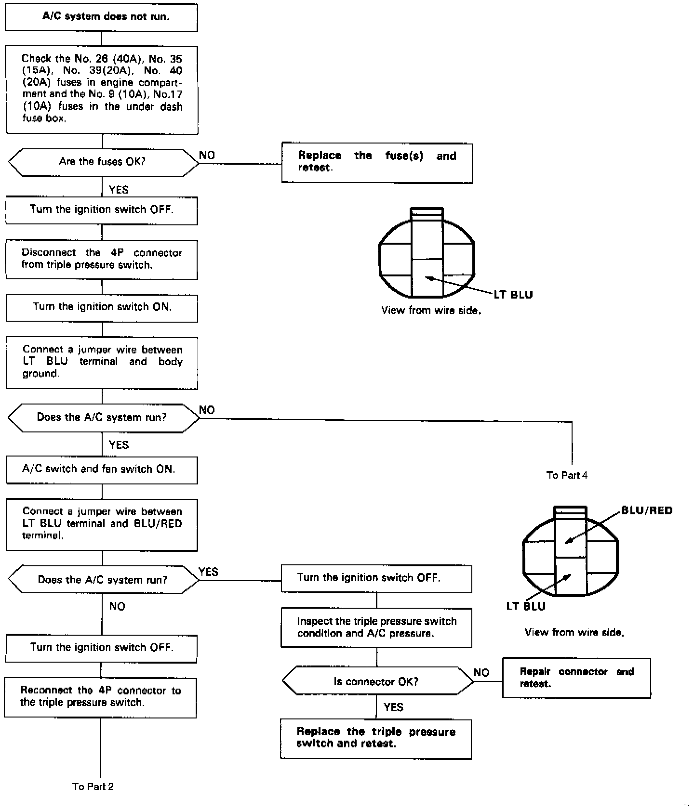
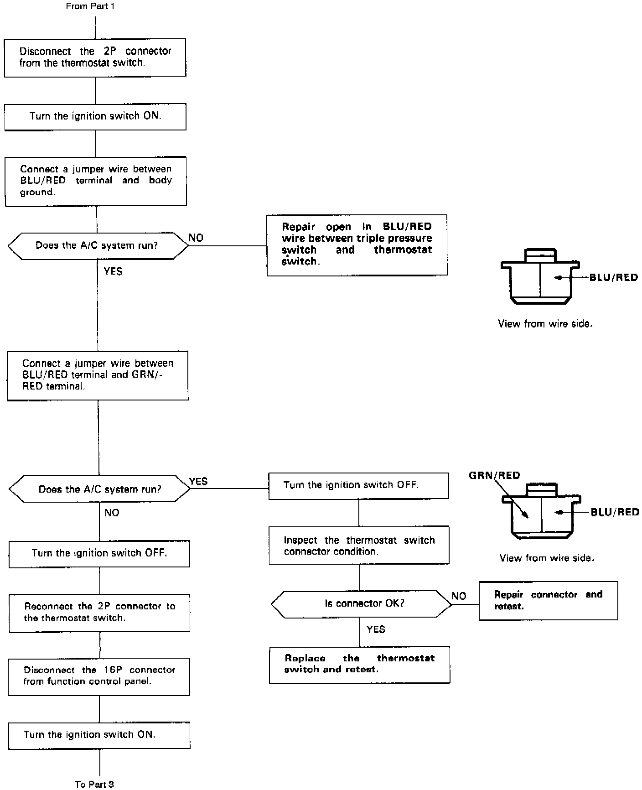
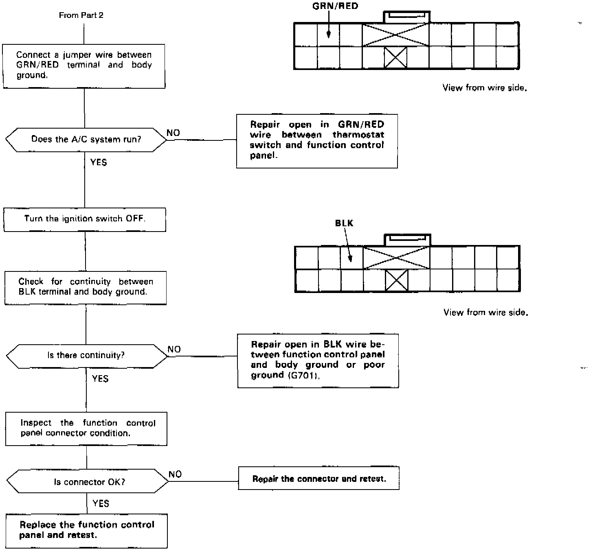
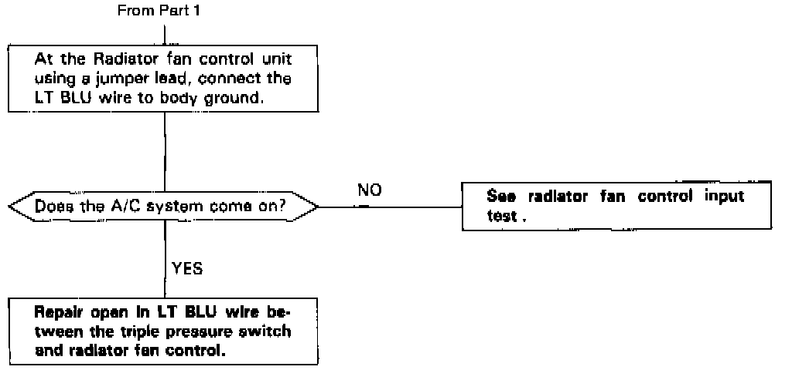

Operation CHARM
: Car repair manuals for everyone.
Home
>>
Acura
>>
1989
>>
Legend Coupe V6-2675cc 2.7L SOHC FI
>>
Repair and Diagnosis
>>
Engine, Cooling and Exhaust
>>
Cooling System
>>
Testing and Inspection
>>
Symptom Related Diagnostic Procedures
>>
Manual Heating and Air Conditioning
>>
Flow Chart "A" - A/C System
Flow Chart "A" - A/C System
NOTE:
Use the digital multimeter (KA-AHM-003) to check.
A/C System, Part 1 Of 4:

A/C System, Part 2 Of 4:

A/C System, Part 3 Of 4:

A/C System, Part 4 Of 4:
